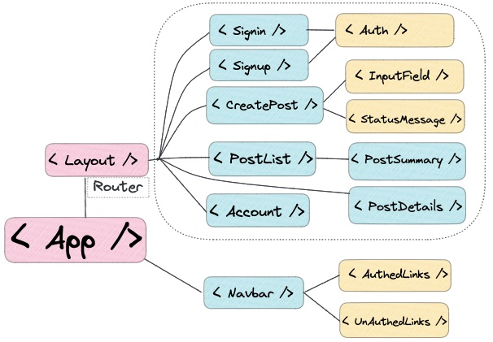

Planning our CRUD App
Component Tree Plan
Tech Stack Plan

Vite.js
CSS framework: MVP.css
React with:
React Router
Redux Toolkit
Supabase:
PostGres Database
User Authentication
Let's see the Prototype/Mock
Bookmarks App (2023)
Post-a-link App (2022)
Signin/Signup Page
Post List & Details
The Input Forms: Account & Create Post
User Stories
Let's setup each of the following things:
🧹
Supabase
Docs
Free, Open Source Software (FOSS)
Postgres SQL Database & SQL Editor
Row level Security
Authentication & S3 file Storage
PostGres Database
Benefits of using Postgres
Plus we can practive some SQL with it which will be a great skill to
have in the future that complements fronted development skills really
well.
Kinds of Databases
Relational (SQL: Postgres, MySQL, SQLite)
NoSQL
Document (JSON: Firebase, MongoDB)
Graph (Neo4j, ArangoDB)
Columnar (RedShift, Cassandra, ClickHouse)
Key-Value Store (DynamoDB, Couchbase, Redis)
Time Series (Prometheus, InfluxDB, TimescaleDB)
Using MVP.css
We'll globally import MVP.css framework to get nice styles
effortlessly.
Just add this import to the top of your global
index.css file:
@import "https://unpkg.com/mvp.css@1.12/mvp.css";
OR add a link tag in your index.html file:
<link rel="stylesheet" href="https://unpkg.com/mvp.css@1.12/mvp.css">
MVP.css Docs
Install JS Dependencies
There are four npm packages we'll need:
react-router-domreact-redux@reduxjs/toolkit@supabase/supabase-js
You can conveniently install multiple packages at once:
npm install react-router-dom react-redux @reduxjs/toolkit @supabase/supabase-js
Using Simple-Icons Library via cdn
<img height="32" width="32" src="https://cdn.simpleicons.org/[ICON_NAME]" />
Simple Icons docs
Icon Gallery
API tokens & secrets
Don't push your
secrets or tokens to Github
Create a .env file in your project root & then
.gitignore those files so they stay only on your local
computer
Import the secrets/tokens into your project securely (usually with
dotenv pkg) or for Vite.js using
import.meta.env.VITE_SECRET_NAME
Vite Env Vars Docs
Deploying Vite to Vercel, Part 1
Why can't we deploy our CRUD app to github pages? Because it doesn't support env
vars
In your Vite project:
Update your Vite project's vite.config.js to the
default configuration.
It should look like this:
import { defineConfig } from 'vite'
import react from '@vitejs/plugin-react'
export default defineConfig({
plugins: [react()],
})
Add a file called vercel.json to the root of your
project directort.
It should have this content inside:
{
"rewrites": [
{
"source": "/(.*)",
"destination": "/"
}
]
}
Push these changes up to your remote project repo in Github.com
Deploying Vite to Vercel, Part 2
Configuring Supabase & Vercel Consoles
At Vercel.com
Create an account in Vercel and start a new project. Link it to your
Github project repo.
Copy & Save the site name & site url that's assigned to your new project. You'll need this to configure
Supabase later.
Add your environment variables (VITE_SITE_URL,
VITE_ANON_KEY) to the Settings >
Environment Variables section in Vercel
At Supabase.com:
In the Supabse console, go to Authentication >
URL in the sidebar & change the site url to the url
given in the Vercel project console.
Add https://**vercel.app/*/* to the
Redirect URLs panel
Back at Vercel.com
In your Vercel.com Console: Click Deploy Site
Serverless Cloud Functions
Netlify Functions Docs
Supabase Edge Functions